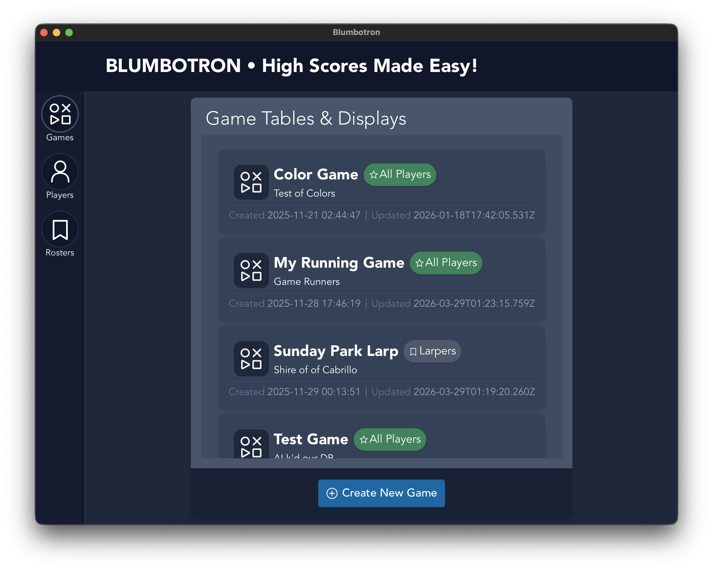
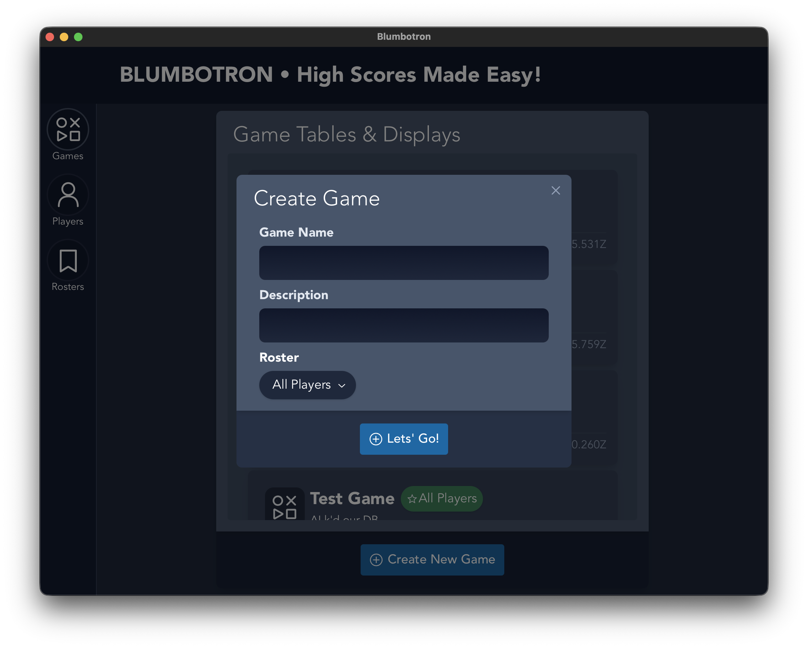
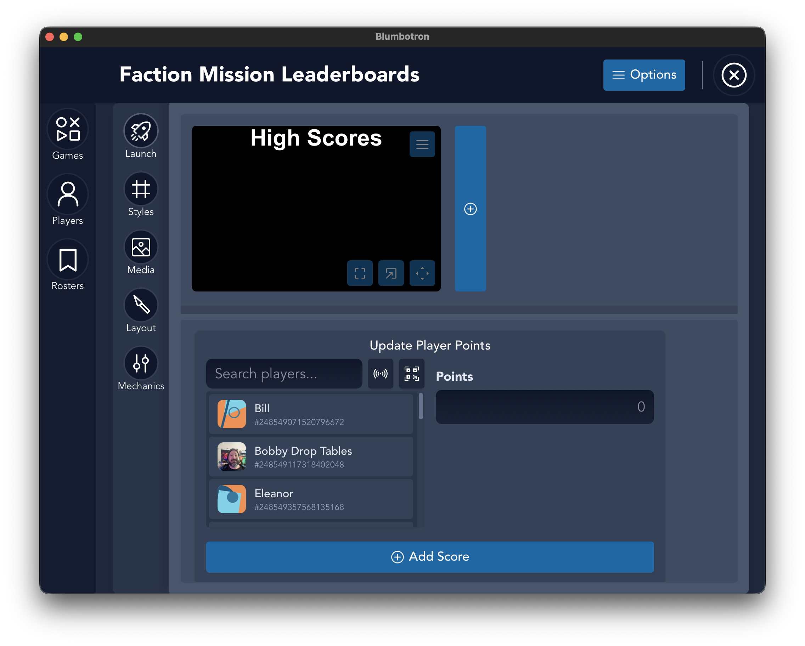
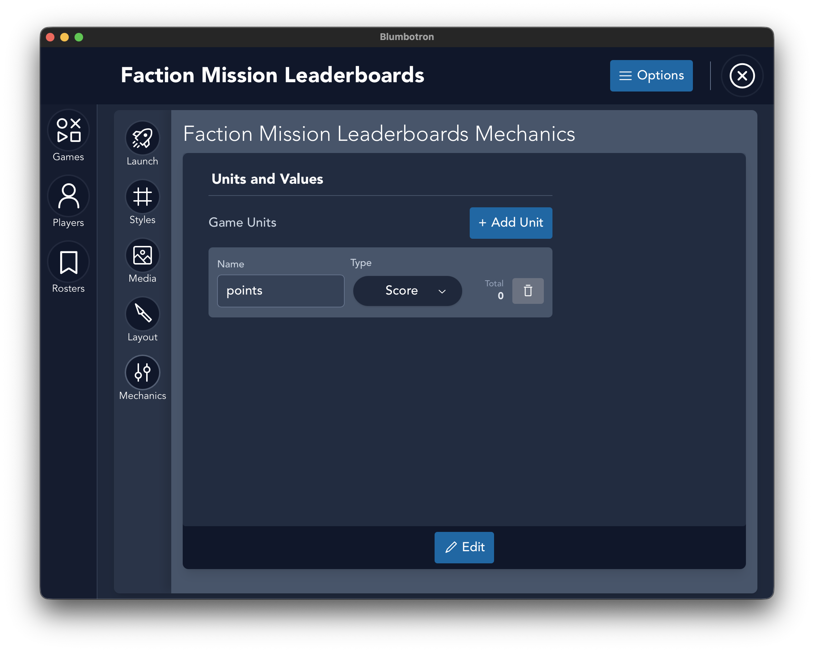
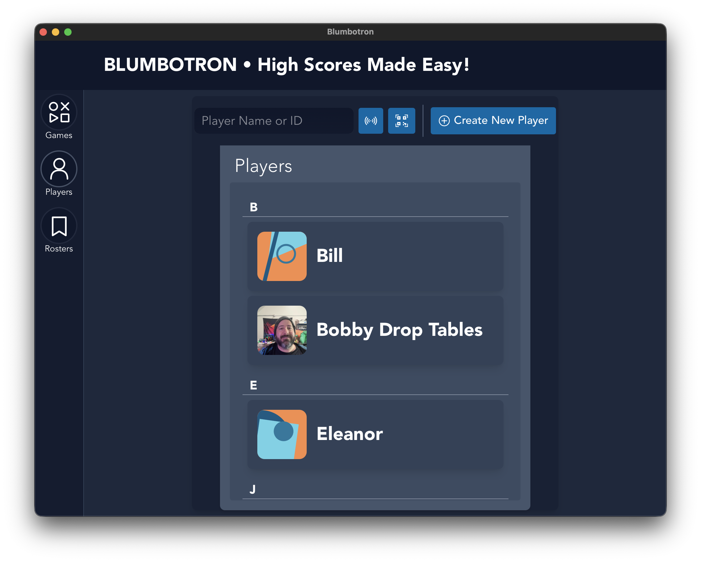
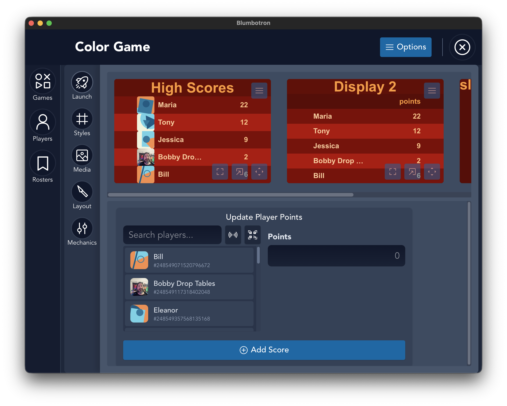
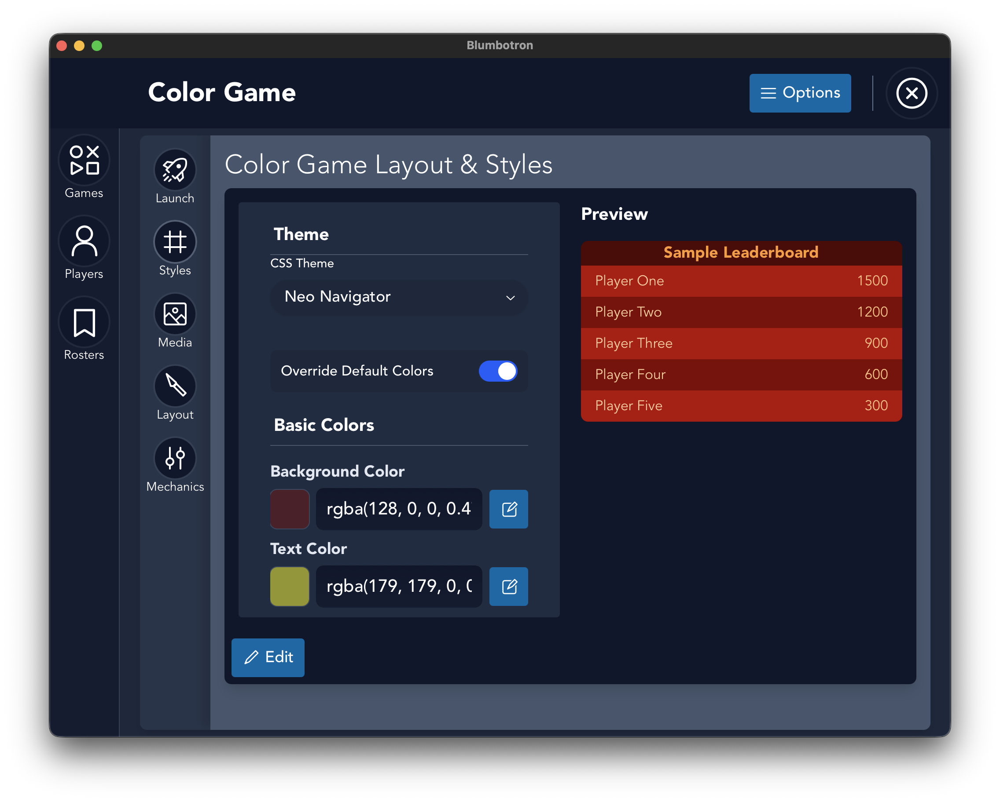
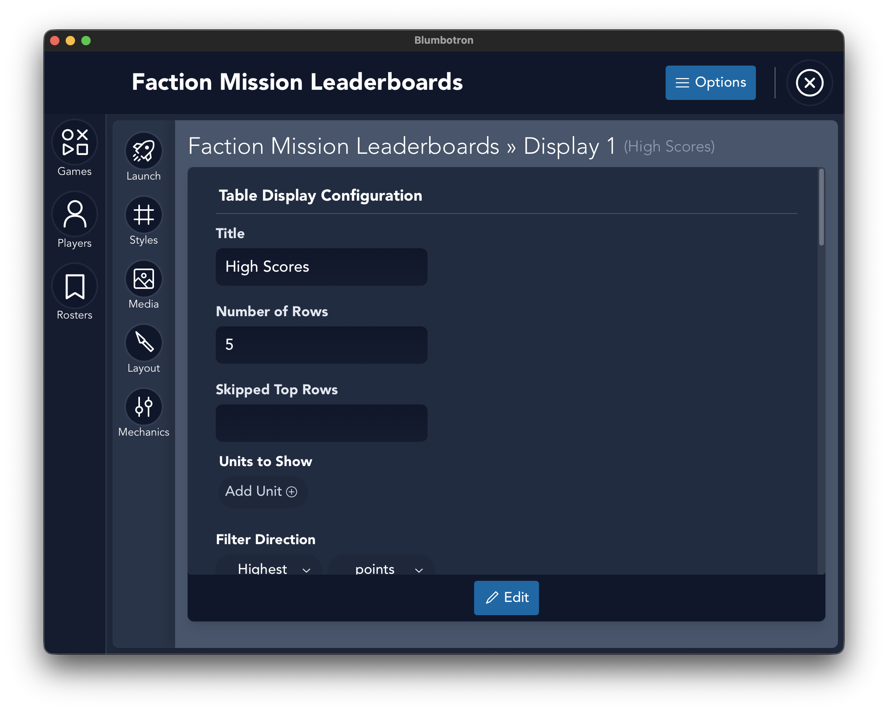
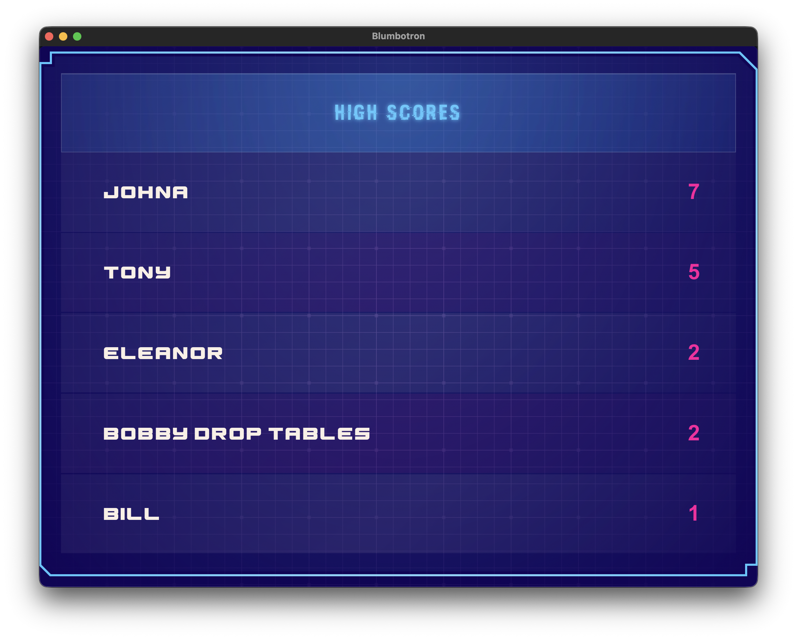

Documentation
Everything you need to run leaderboards at your event
← Back to Home1. Creating a Game
A game is the central unit in Blumbotron. Each game has its own scoring system, leaderboard displays, and visual theme.

Create a new game
- From the Home view, click Create New Game.
- Enter a name for the game (minimum 3 characters).
- Optionally add a description.
- Optionally assign a roster to limit which players can participate.
- Click Save.
Your game is created with a default scoring unit (points) and a default leaderboard display. You can customize both from the game detail view.

Game settings
Once inside a game, use the sub-navigation tabs to configure different aspects:
- Launch — view and manage your leaderboard displays
- Styles — pick a theme and customize colors and fonts
- Media — add background images and logos
- Layout — adjust padding and spacing
- Mechanics — configure scoring units (score, flag, or time)

Scoring units

Under Mechanics, you can add one or more scoring units. Each unit defines a type of score to track:
- Score — a numeric value (points, kills, etc.)
- Flag — a boolean achievement (completed/not completed)
- Time — a time-based value (fastest run, elapsed time, etc.)
2. Adding Players
Players are stored in a global database and persist across all of your games and events. Create them once, use them everywhere.
Create a player
- Navigate to the Players view from the sidebar.
- Click Create New Player.
- Enter a name for the player.
- Optionally upload a photo or avatar.
- Optionally add alternate IDs (for RFID badges or QR code scanning).
- Click Save.

Players without a photo will receive an auto-generated avatar.
Organizing players with rosters
Rosters let you group players for a specific event or tournament. When you assign a roster to a game, only those players will appear in the score entry interface.
- Navigate to the Rosters view from the sidebar.
- Click Create New Roster.
- Give the roster a name and optionally a description.
- Add players to the roster's allow list.
- When creating or editing a game, select this roster to filter available players.
3. Updating Scores
Scores are entered through the score entry widget on the game view.
Record a score
- Open a game from the Home view.
- In the score entry area, search for a player by name, ID, or alternate ID.
- Select the player from the results.
- Enter the score value for each scoring unit.
- Submit the score.

Real-time updates: Score changes are broadcast to all open display windows automatically. Any leaderboard screens you have open will refresh with the latest rankings.
Clearing scores
To reset all scores for a specific scoring unit, go to the Mechanics tab in your game settings. Each unit has an option to clear all of its recorded scores. This is useful when re-running an event or starting a new round.
4. Themes and Colors
Each game's leaderboard can be styled independently. Customize the look from the Styles tab in the game view.

Built-in themes
cyTerminal
Retro cyan and green terminal aesthetic. Great for arcade and hacker events.
neoNavigator
80s synthwave cyberpunk look with bold neon colors.
neuralNet
Green-on-black hacker style. Clean and minimal.
Custom color overrides
Enable Color Override in the Styles tab to replace any of the theme's default colors with your own. The following colors can be customized:
| Setting | What it controls |
|---|---|
| Background | The table and slide background color |
| Text | Default text color |
| Table Header | Background color of the header row |
| Table Row | Background color of odd rows |
| Table Alt | Background color of even/alternating rows |
| Font Header | Text color for the leaderboard title |
| Font Player | Text color for player names |
| Font Score | Text color for score values |
The Styles tab includes a live preview so you can see your changes in real time before displaying them.
Fonts
You can set custom fonts for three areas of the leaderboard independently: the header/title, player names, and score values. Blumbotron includes 13 built-in fonts ranging from clean sans-serifs to specialty display fonts.
Media
Under the Media tab, you can upload:
- Background image — displayed behind the leaderboard with adjustable opacity
- Logo image — positioned on the leaderboard with adjustable scale, position, and offset
You can also toggle player avatars on or off from this tab.
6. Display Configuration
Each game can have multiple displays, and each display is configured independently. This lets you show different views of the same game — for example, a top-5 quick view and a full 20-row leaderboard.

Display types
- Table — a traditional leaderboard with ranks, player names, avatars, and scores in rows and columns.
- Slide — a markdown-based display for showing custom text, announcements, or event information.
Table settings
| Setting | What it does |
|---|---|
| Title | Custom header text shown at the top of the leaderboard |
| Rows | Number of players to show in the table |
| Offset | Skip the first N players (useful for showing ranks 6-10 on a second display) |
| Sort Direction | Ascending or descending (highest or lowest score first) |
| Sort By | Which scoring unit to rank players by |
| Filtered Units | Which score columns to show in the table |
| Show Avatars | Toggle player photos/avatars in the table |
| Show Subheaders | Toggle column labels below the title |
7. Data Storage
Blumbotron stores all data locally in a SQLite database. No internet connection is required.

Database locations
| Platform | Path |
|---|---|
| macOS | ~/Library/Application Support/btron/blumbo.db |
| Windows | %APPDATA%\btron\blumbo.db |
| Linux | ~/.local/share/btron/blumbo.db |
Backup tip: Copy the blumbo.db file to back up all your games, players, rosters, and scores. Restore by replacing the file at the same path.